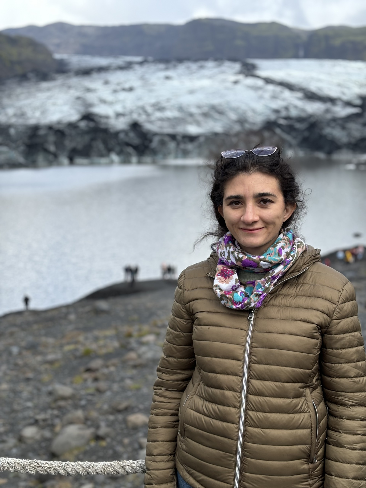
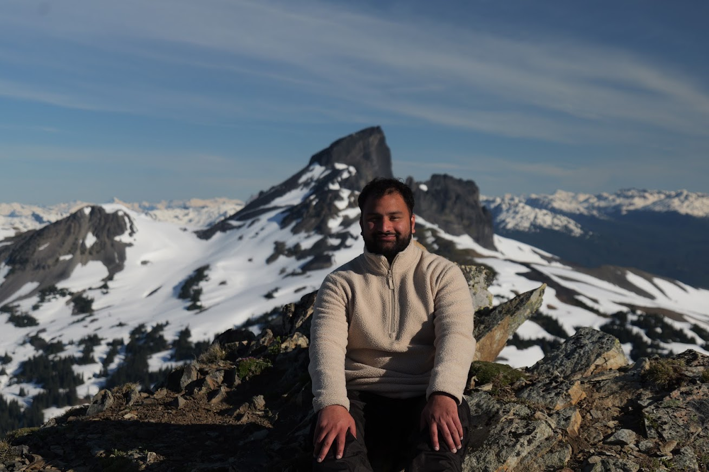
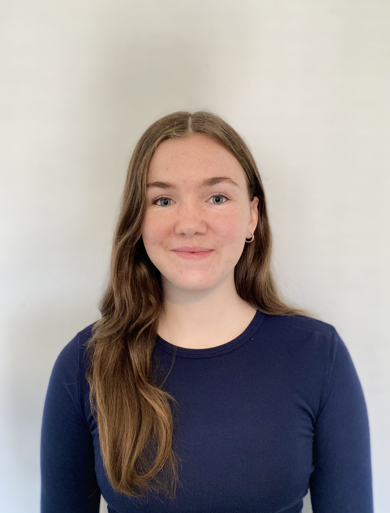
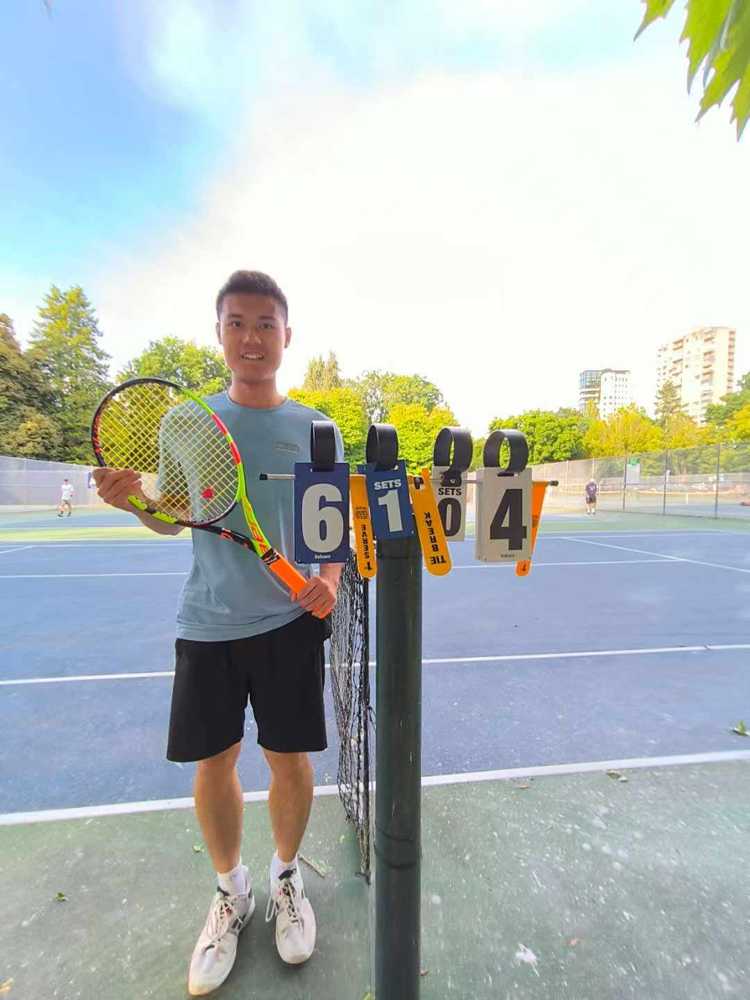
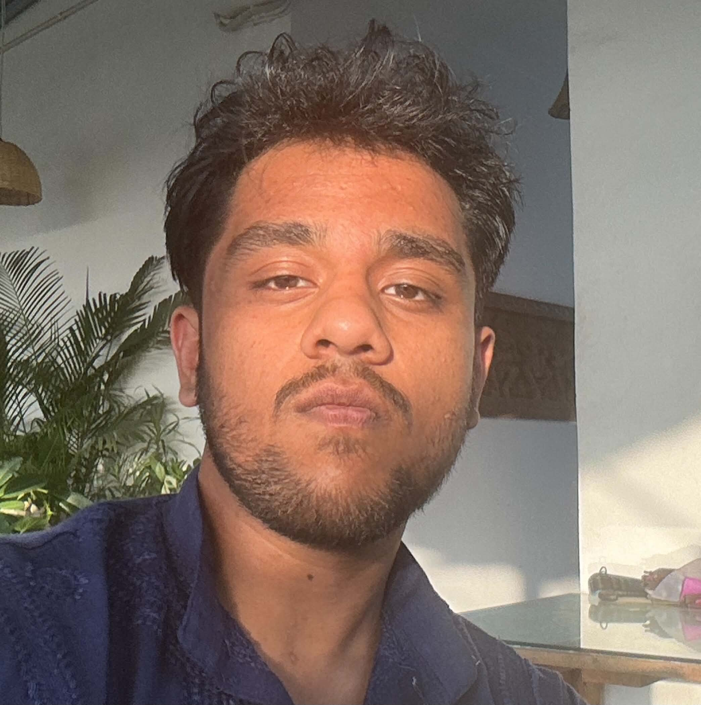
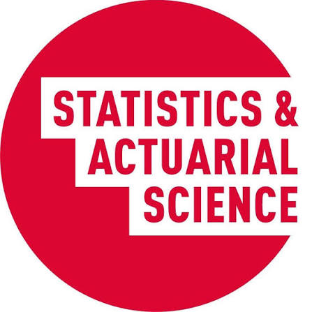
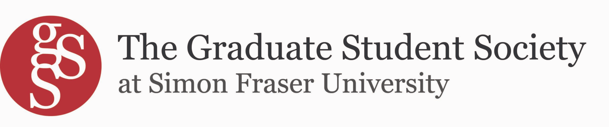

About
The SFU/UBC Joint Statistics Seminar is jointly hosted by the graduate students of the SFU Department of Statistics and Actuarial Science and the UBC Department of Statistics. The Fall 2026 event is the first of two events taking place in the 2026/2027 academic year. The Fall 2026 event is organized by the SFU Statistics and Actuarial Science Graduate Caucus, and the Spring 2027 event will be organized by graduate students from UBC. Over its 20-year history, the event has offered Statistics and Actuarial Science graduate and undergraduate students, as well as interested students from related departments, at both schools an opportunity to network with their peers and to attend accessible talks about the research work of their fellow students and faculty.
The Fall 2026 event will be held in person at SFU Harbour Centre on Saturday, November 21, 2026. This day-long event includes talks given by six students (three from SFU and three from UBC) and one faculty member from SFU. Breakfast and lunch will be provided.
Schedule
Times are tentative and subject to change.
- 10:00 – 10:25 am
Breakfast
- 10:25 – 10:30 am
Welcome Message
-
10:30 – 10:55 am
Hashan Peiris SFU
Injury risk management in the National Basketball Association: an actuarial approach
Major professional sports leagues have become large-scale financial institutions, increasing the financial risk associated with athlete injuries and the need for injury risk management. Injuries in the national basketball association are analyzed from the perspective of insurable risks using a three-part actuarial compound model for injury frequency and a two-part severity structure capturing missed games per injury and financial loss per missed game. The model is fit on a novel dataset from the 2022-23 NBA regular season combining injury reports, tracking and box score metrics, salary and demographic information, travel, television market variables, attendance, and estimated single-game values. Higher expected losses are predicted for players with higher salaries, average minutes played above 32 per game, and larger markets. The top ten players account for about $453m in at-risk injury losses per season, exceeding 25% of total estimated at-risk losses. Risk mitigation implications follow from the actuarial structure. A uniform 10% reduction in average minutes is estimated to reduce expected compound loss for the highest-risk players by 30–35% (about $9–25m per player). Leaguewide, shortening NBA games from 48 to 40 minutes is estimated to reduce total expected claims by about $493m.
-
11:00 – 11:25 am
Hasmik Margaryan UBC

Conditional quantile estimation via conditional extreme value model
Extreme value theory (EVT) provides a well-established framework for modeling and extrapolating rare events; however, extending it to the multivariate setting is more challenging under asymptotic independence between variables. The Heffernan–Tawn (HT) conditional extremes model handles this by modeling one variable given that another is extreme, but it fits its key parameters once, globally, across all covariate values. This limits the estimation accuracy wherever the dependence structure shifts or data are sparse.
The project proposes a locally adaptive estimator for the HT model based on random-forest-derived adaptive neighbourhoods and weighted quantile regression. In simulations across five dependence structures, this localized estimator consistently reduces RMSE relative to the standard approach, with the biggest improvements showing up under weak asymptotic dependence and at the most extreme quantile levels.
-
11:30 – 11:55 am
Ananga Bajgai SFU

Disease as a conservation threat is non-randomly distributed among animal taxa: An examination with a large language model
Infectious diseases are a known cause of population extirpation and species extinction. We perform a broad survey of the IUCN Red List to identify taxa within Animalia with a disproportionate percentage of species threatened by disease. A key challenge in this analysis is the identification of species threatened by infectious diseases which relies on textual data from the Red List. Given recent advances in large language model (LLM) text processing, we quantify the ability of OpenAI's GPT LLM to classify conservation threats and compare its performance to a standard keyword search. We find that the GPT LLM has little performance advantage over standard methods. Regardless of the classification test used, we find that disease as a conservation threat is non-randomly distributed among Animalia classes with amphibians being disproportionately threatened. Disease is also non-randomly distributed among mammalian orders, confirming previous findings that this threat is most common among Carnivora and Cetartiodactyla. In contrast, the threat of infectious disease is more randomly distributed among avian orders. Finally, we find that species with domesticated relatives are disproportionately threatened among ray-finned fishes (Actinopterygii), and in other classes in a supplementary analysis, supporting that disease spillover from closely related domesticated species is an important conservation concern. These findings confirm and complement results from previous surveys and provide a useful example for the rigorous assessment of LLMs for data processing in conservation biology.
-
12:00 – 12:25 pm
Kelly-Ann Lessard UBC

The Effect of Prior-Data Conflict in Pediatric Bayesian Randomized Controlled Trials Using Adult Borrowing: A Simulation Study
Bayesian methodology allows researchers to incorporate relevant external information into randomized controlled trials (RCTs), reducing the required sample size. This is particularly advantageous in pediatrics, where underpowered trials due to insufficient sample size are frequent, partly because of recruitment difficulty. When pediatric information is unavailable, adult information can be used instead if it is believed that the treatment studied has a similar effect in both populations. Adult borrowing in Bayesian RCTs is a validated statistical method and is used in practice. However, concerns remain about the validity of conclusions if prior-data conflict were to occur. We conducted a simulation study to assess how different degrees of prior-data conflict affect the operating characteristics of pediatric Bayesian RCTs using adult borrowing across a range of sample sizes. It also examines different levels and methods of discounting to mitigate the effect of prior-data conflict. To assess the properties in a simple, intuitive context, 10,000 pediatric trials were simulated using a beta-binomial model. Pediatric data were simulated with different degrees of concordance with the adult prior and different sample sizes. Independent Beta priors were used in the control and treatment arms to represent adult information with a moderate true treatment effect, and different discounting methods were applied: no discounting, power priors (with various levels of discounting), and robust mixture priors. To show that the results extrapolate to more complex models, the Keta4SI ketamine trial will be used as a case study. Multiple operating characteristics were assessed. Preliminary findings reinforce the importance of discounting to reduce the occurrence of inadequate conclusions.
- 12:30 – 1:30 pm
Lunch
-
1:30 – 1:55 pm
Yueyang Han SFU

Drug-Combination Trials with Multi-Graded Outcomes
We propose a model-assisted phase I/II clinical trial design to identify the optimal biological dose (OBD) for drug combinations, where both toxicity and efficacy endpoints are multi-categorical and multi-graded. The design is well-suited for trials with non-monotonic dose-response relationships, such as those involving immunotherapeutic agents. In these settings, toxicity and efficacy are more accurately represented by graded categories. We find the optimal biological dose as the dose combination with the largest expected utility among all the dose combinations that satisfy the safety constraint. Simulation studies demonstrate that our design exhibits superior operating characteristics compared to existing dose-finding methods for drug combinations.
-
2:00 – 2:25 pm
Arqam Rizwan UBC

Convergence and efficiency of annealed importance sampling with imperfect transitions
Annealed importance sampling is a popular method for estimating normalising constants. However, its behaviour in realistic settings is poorly understood as most theory assumes that the transition kernels yield exact, independent samples. We conduct the first general analysis of AIS without assuming perfect transitions. The main results include a central limit theorem for the log-normalising constant estimator, as well as non-asymptotic bounds on the bias and variance. We capture the dependence of the asymptotic error, termed annealing complexity, on the problem and configuration and show that it scales polynomially with dimension. Finally, we discuss guidelines to minimise annealing complexity, including the optimal kernel-aware annealing schedule. This is joint work with Trevor Campbell and Alexandre Bouchard-Côté.
-
2:30 – 3:30 pm
Dr. Lloyd T. Elliott SFU Faculty
Associate Professor, SFU
Random Number Generators in Video Games
A Turing machine cannot produce random numbers, and so video games fake randomness using pseudo-random number generators (machine learning software does the same for Monte Carlo Markov chains, stochastic gradient descent, or bagging). I will give a brief history of games, from Mancala to Mario and show how randomness (or lack thereof) can be used and exploited.
- 3:40 pm onwards
Closing & Networking at Steamworks
Register
Registration is free. Please RSVP through the Google Form below.
If you have any questions, please contact aba211@sfu.ca.
Sponsors

